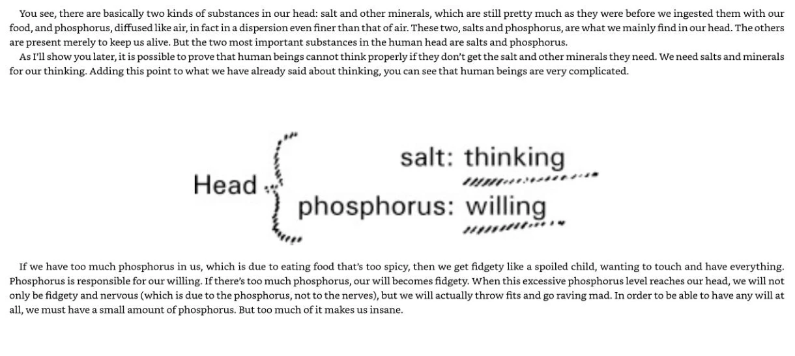

Da digestão ao pensar e querer
Um monte de peças de bicicleta não transporta uma pessoa, mas uma bicicleta montada pode transportá-la. A diferença mostra por que um material isolado nem sempre é um modelo adequado de um conjunto organizado. Da mesma forma, mostrar que o sal isolado não pensa não decide, por si só, entre uma explicação espiritual do pensamento e uma explicação que envolve sistemas biológicos organizados.
A captura 65 relaciona sais ao pensar e fósforo disperso ao querer. Steiner pergunta por que sal isolado não pensa nem fósforo queimando desenvolve vontade, embora uma pessoa possa fazê-lo. Sua resposta é a alma-espírito usando materiais sem se reduzir a eles. Isso esclarece a explicação proposta, mas não exclui que sistemas biológicos organizados tenham capacidades ausentes em ingredientes isolados.
Memorizar sal igual a pensamento perde a finalidade da passagem. A conclusão é que algo atua pela matéria; a captura 66 critica atenção exclusiva a estruturas mortas. A insuficiência de uma substância isolada demonstra um agente separado ou apenas a inadequação de modelar um cérebro organizado por um ingrediente? O texto oferece uma resposta; a inferência continua aberta ao exame.
As relações sal/pensar e fósforo/querer não são mecanismo estabelecido nem guia de suplementação. Não se deve reproduzir o exemplo de fósforo ou pontas de fósforos como experimento. O contraste com sistemas nervosos organizados permanece explícito.
Aprenda o livro em detalhe
Explique a passagem do alimento transformado à interpretação de pensar e querer.
Anexo atual: PDF de 122 páginas, posições 63–68. As explicações e os casos são ensino original, não citações. Referências nas leituras anteriores usam o arquivo antigo de 118 capturas; o guia relaciona os dois.
Quatro transformações distintas
A lista apresenta amido → açúcar; proteína → proteína líquida; gorduras → glicerina e ácidos graxos; minerais → minerais. Depois descreve álcool como conservante produzido no processamento proteico. A digestão atual é explicada por enzimas, peptídeos e aminoácidos, não por conservação em álcool intestinal. Digerir amido tampouco significa que todos precisem adicionar açúcar.
O copo de água e seus limites
Steiner usa açúcar dissolvido em água para defender distribuição pelos fluidos sem o trajeto vascular habitual. Acrescenta uma proporção de noventa por cento de fluidos e explica enxaquecas por depósitos. Um copo agitado esclarece difusão, mas não contém barreiras intestinais, circulação, órgãos e regulação. Não demonstra que água ingerida salte a corrente sanguínea até a urina nem estabelece diagnóstico de enxaqueca.
Sal, fósforo e postura ereta
Flutuação e postura ereta preparam a afirmação de que sais apoiam o pensar e fósforo muito disperso apoia o querer. A relação trata do uso de condições materiais pelo anímico-espiritual. Não recomenda aumentar sal ou fósforo. O exemplo do fósforo de palito é exposição histórica, jamais exercício de ingestão ou de fogo.
O passo filosófico decisivo
Sal na mesa não pensa; fósforo queimando não quer. Steiner infere uma organização anímico-espiritual a partir dos papéis que atribui a essas substâncias na pessoa viva. Conclui que estudar substâncias é incompleto sem estudar o organismo ativo. Compreender a inferência também exige perguntar se ela é a única explicação possível dos exemplos.
Compare a figura ou tabela original · PDF 67

Use o que aprendeu
O que se perde ao tratar o esquema sal/fósforo como lista de compras?
Leia uma explicação comentada
Ele procura defender uma organização anímico-espiritual que utiliza matéria. Convertê-lo em instruções de consumo elimina a pergunta filosófica e inventa uma indicação de dose que o esquema não estabelece.
Duas perguntas — opcionais
Como o capítulo explica o argumento sobre sal e pensamento?
Ver uma explicação
A captura 65 relaciona sais ao pensar e fósforo disperso ao querer. Steiner pergunta por que sal isolado não pensa nem fósforo queimando desenvolve vontade, embora uma pessoa possa fazê-lo. Sua resposta é a alma-espírito usando materiais sem se reduzir a eles. Isso esclarece a explicação proposta, mas não exclui que sistemas biológicos organizados tenham capacidades ausentes em ingredientes isolados.
Por que o fato de o sal isolado não pensar não resolve a explicação do pensamento?
Ver uma explicação
Um monte de peças de bicicleta não transporta uma pessoa, mas uma bicicleta montada pode transportá-la. A diferença mostra por que um material isolado nem sempre é um modelo adequado de um conjunto organizado. Da mesma forma, mostrar que o sal isolado não pensa não decide, por si só, entre uma explicação espiritual do pensamento e uma explicação que envolve sistemas biológicos organizados.
Leitura opcional: Distribuir e transformar são perguntas diferentes
No texto inglês da palestra, Steiner não diz apenas que o alimento fornece fósforo. Afirma que o movimento ascendente no corpo ereto transforma parte das substâncias alimentares, incluindo açúcar e glicerina, naquilo que chama de uma espécie de fósforo. É uma transformação adicional proposta, além da ideia anterior de que substâncias dissolvidas se espalham pelos fluidos corporais. Leia isso como a explicação desta palestra, não como descrição estabelecida da digestão.
Conserve três passos: um trajeto proposto pelo organismo; uma mudança proposta no que a substância é; e a alma-espírito que utilizaria os materiais resultantes. O copo de água pode ajudar a imaginar a distribuição. Não demonstra o segundo nem o terceiro passo. Separar esses passos ajuda a reconstruir o argumento antes de avaliá-lo.
| Passo | O que o relato afirma | O que a comparação com o copo oferece |
|---|---|---|
| Distribuição | Substâncias dissolvidas se espalham pelos fluidos. | Uma imagem de distribuição num líquido. |
| Transformação adicional | Parte dos nutrientes ascendentes torna-se o que o texto chama de uma espécie de fósforo. | Nenhuma demonstração dessa mudança. |
| Agente | A alma-espírito utiliza materiais para pensar e querer. | Nenhuma demonstração independente desse agente. |
Mude o caso: Uma estudante dissolve açúcar num copo, observa sua distribuição e escreve: “Isso demonstra a transformação em fósforo descrita no capítulo”.
Qual resposta conserva as duas perguntas distintas?
Espalhar-se por todo o copo já demonstra uma transformação em outra substância.
Reconsidere. Movimento numa mistura e mudança de qual substância está presente são afirmações diferentes. A distribuição observada não identifica uma nova substância.
O copo pode ilustrar distribuição; a transformação em fósforo proposta pela fonte é outra afirmação, que essa distribuição não estabelece.
Sim. Primeiro exponha corretamente a afirmação adicional e depois pergunte o que a sustentaria. Uma analogia pode esclarecer um trajeto sem demonstrar outra substância nem o agente anímico-espiritual.
Como o copo não estabelece essa mudança, o capítulo não afirma nenhuma transformação.
Reconsidere. A fonte acrescenta expressamente a transformação na captura atual 66. O limite da analogia não apaga o que a fonte diz; identifica o que ainda precisa ser examinado.
Comparação didática original de Nutrition, capítulo 6, posições 65–68 da fonte atual de 122 capturas, especialmente o último parágrafo da 66. As citações existentes conservam suas próprias referências antigas.
Leitura completa, fontes e outras práticas — opcional
Identifique a inferência dos processos digestivos para uma explicação espiritual do pensamento.
Transformação além das secreções
As capturas 61–62 distinguem carboidratos, proteínas, gorduras e minerais, abordam álcool endógeno e usam um copo de água como comparação. A intenção é mostrar que incorporar alimento não equivale a lançar substâncias num recipiente. A analogia não estabelece todas as vias propostas nem a estimativa exagerada da água corporal presente no capítulo.
Fluidos e organização
Nas capturas 63–64, movimento de líquidos, excreção e sustentação do cérebro por fluido dirigem a atenção a relações perdidas quando se estudam apenas órgãos sólidos isolados. A organização corporal, não apenas a massa de um órgão, possibilitaria atividade humana. A discussão de enxaqueca e ácido úrico acrescenta uma causa de doença que precisa ser avaliada separadamente.
Sal e fósforo
A captura 65 relaciona sais ao pensar e fósforo disperso ao querer. Steiner pergunta por que sal isolado não pensa nem fósforo queimando desenvolve vontade, embora uma pessoa possa fazê-lo. Sua resposta é a alma-espírito usando materiais sem se reduzir a eles. Isso esclarece a explicação proposta, mas não exclui que sistemas biológicos organizados tenham capacidades ausentes em ingredientes isolados.
Identificar a inferência
Memorizar sal igual a pensamento perde a finalidade da passagem. A conclusão é que algo atua pela matéria; a captura 66 critica atenção exclusiva a estruturas mortas. A insuficiência de uma substância isolada demonstra um agente separado ou apenas a inadequação de modelar um cérebro organizado por um ingrediente? O texto oferece uma resposta; a inferência continua aberta ao exame.
Leitura atenta opcional · trecho incluído
Excerto original em inglês
Preservado do curso inglês; não foi retraduzido nem conferido novamente nesta edição.
This something in us is what we can call the soul-spirit, living and working in us.
Rudolf Steiner · captura 65. Leitura integral opcional: capturas 61–66.
Questões opcionais com explicações
Compreender uma afirmação não exige concordar com ela. As respostas também abrem sem JavaScript.
Descrever e explicar
Responda se desejar. As respostas não são enviadas nem salvas; copie-as antes de sair.
Reconstrua contraste, resposta e questão restante.
Comparar com uma resposta comentada
Substâncias isoladas não pensam ou querem, mas uma pessoa viva o faz. Steiner propõe alma-espírito. Resta perguntar se a organização biológica explica o contraste sem estabelecer esse agente separado.
Como a discussão dos fluidos prepara o pensar?
Comparar com uma resposta comentada
Ela dirige a atenção à organização e às relações além dos sólidos isolados; depois o autor atribui à alma-espírito o uso da matéria no pensar e querer. A conexão torna o argumento claro, sem prová-lo.